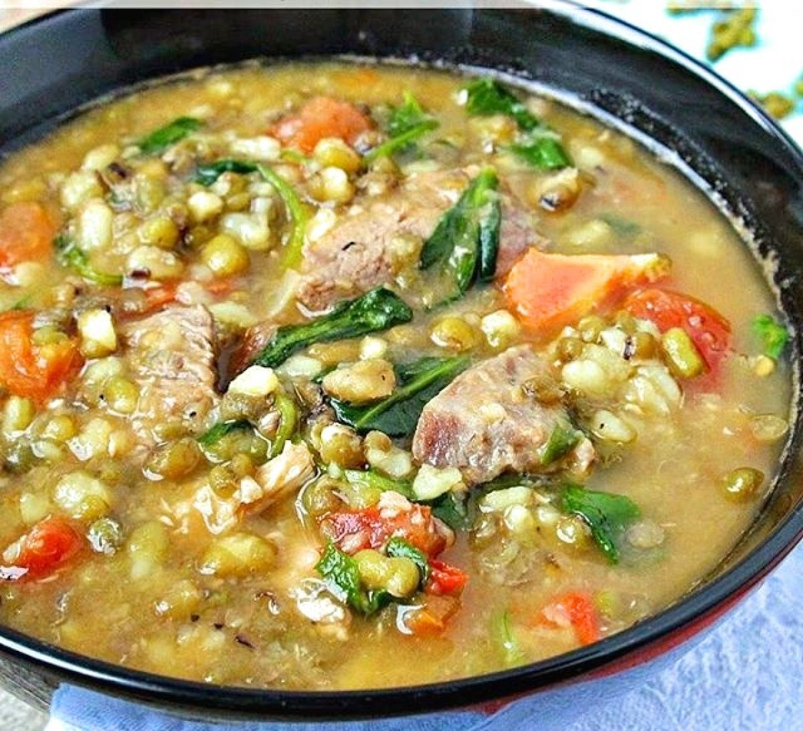

Pork Monggos

Description
Pork Monggo or Ginisang Munggo with Pork is a sautéed soupy dish made up mainly of pork and mung beans.
Ingredients
- 6 ounces pork sliced into thin small pieces
- 1 cup mung beans (monggo)
- 4 cloves garlic minced
- 3 tbsps cooking oil
- 1 medium onion sliced
- 2 medium tomatoes sliced
- 1 cup malunggay leaves
- 2 tbsp patis (or to taste)
- 1 Knorr pork cube
- 1 bunch spinach washed
- ¼ tsp ground black pepper
- 6 cups water
Steps
- Heat oil in a cooking pot.
- Saute garlic, onion, and tomato.
- Add the pork. Cook until the color of the pork turns light brown.
- Pour water into the pot. Let boil.
- Add the pork cube. Stir.
- Add the mung beans. Cover and adjust the heat between low to medium. Continue to cook until the mung beans become tender. Add more water, if necessary.
- Put the malunggay leaves and spinach in the cooking pot. Stir and cook for 2 minutes.
- Add ground black pepper and fish sauce. Cook for 2 to 3 minutes.
- Transfer to a serving bowl.
- Serve. Share and enjoy!